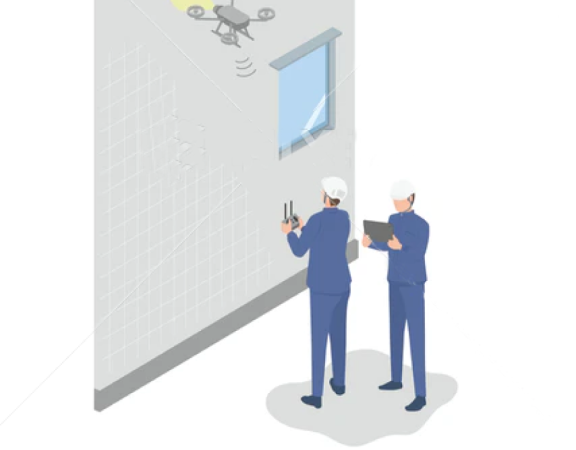
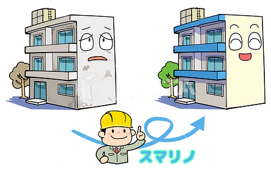

この家が好き
家族みんながずっと大好きでいられるような、お家づくりのお手伝い
スマリノ?
What's SmaReno?

-
 スマリノは
スマリノは
-
 リノベーション
リノベーション
工事ではありません。 -
中古物件を
うためのあらゆる
サービスです。 -
リノベーション済み
物件も扱います。 -
築浅物件も扱います。
-
リフォームが必要な
中古物件も扱います。
だからお客様の選択肢を増やします。
SmaReno

中古物件の成約数は新築物件の成約数を超えました。
それはお客様が｢資産価値｣に目を向けたからです。
スマリノは｢資産価値｣を最大化するために
特化した｢サービス｣です。

しっかりと資産価値に
目を向け、お客様が10年後も｢この家が好き｣と言える
商品選びがスマリノです。

そのリフォーム本当に必要ですか？
- 建物の修繕は避けられませんが、無駄や無計画なリフォームを検討していませんか？
- 「スマリノ」では無駄や無計画なリフォームを推奨していません。
- トラブルが発生してからでも対応は間に合います。
- しっかりとした修繕計画とそれに合わせた積立。
- そして何より大事にしているのが一生涯の定期サポート。
- 「スマリノ」に安心安全な修繕計画をお手伝いさせてください。

- 「壊れたからなおす」
- 「勧められたのでこれもなおす」
- 「けっこうかかるな」
- 「ローンで借りればいいか」
これがリフォームの常識でした。
付き合いのある業者もなく、訪問してきた業者やネットで検索した業者を選択
無計画なまま、高いか安いかの相場もわからない。
無駄なリフォームの残債の支払いだけが、家計に大きくのしかかる。
エリアNo.1宣言
全ての分野で地域NO1クラス
長期修繕計画、ライフプランニング、定期メンテナンス訪問、問い合わせ対応、顧客数、リフォーム工事実績、長期保証件数、そして営業マン数に至るまで、あらゆる面で地域の中でこの業界をリードしています。
これらの成果は、私たちの専門知識、献身的なサービス、お客様に寄り添う姿勢の結果です。
お客様のニーズに応え続けることで培われた、信頼と実績の蓄積が「スマリノ」の真の強みです。

各分野で地域NO1クラスの実績を誇ります。
スマリノは組織で動く
お客様をバックアップするのは担当営業ではなく、
100名のチームです。
※営業60名と技術40名
-
アフター専属の部署が
あるから安心 -
建設業免許が
あるから安心 -
工事の可視化に
よる安心
スマリノの顧客満足度は4.8
弊社「顧客満足度」はSUUMO調査で地域NO1クラス。
SUUMOの接客評価コメントで5点満点中4.8点の評価をいただいています。
「googleの口コミ」4.5点
内訳 (接客評価コメント228件中)
 194件
27件
6件
0件
1件
194件
27件
6件
0件
1件

スマリノはリフォームではない! 相模原 T様
中古物件に対する考え方が変わりました。 リノベーション済み物件 築浅物件・リフォームが必要な物件を一つ一つ細かく丁寧にスタッ フの方に説明してもらいました。そのおかげで 「資産価値」に目を向けることができるようになりました。 「資産価値」に目を向けたこ とで、10年後も安心して暮らせる素晴らしいマイホームを手にすることができ、 とても満足しています。
スマリノの価格がスゴイ! 町田 F様
当初、 不動産会社とリフォーム会社を別々にお願いしていましたが、 希望通りの内容では予算内に抑えることが出来ませんでした。 しか し、スマリノでは不動産営業の方とリノベーション監督がチームで対応してくれるので、リフォームの営業等に経費がかからないそうで 希望通りの内容で予算より安く抑えることができました。 年間300件以上の工事実績も信頼できます。 現場の職人さんの雰囲気や取付け る設備についても想像以上に納得のいく内容で本当に感謝しています。
スマリノの中古物件探し 八王子 O様
スマリノでは中古物件のメリットを最大限に生かす物件探しができました。 中古物件の資産価値」 の高さや新築に比べた利便性の高さ を知って驚きました。 過去の膨大なデータから価格が下げ止まるタイミングを導き出し、 立地も考えて 「資産価値」の高い中古物件を購 入することができました。
スマリノは物件数が違う! 座間 K様
地元で創業15年という地域に密着した会社だったので、 情報力があるかと思い相談する事にしました。 営業スタッフも60名と多く売却専 業部署まであるそうです。 その売却専門部署が地域最大級らしく、 未公開物件を含め物件数の多さにびっくりしました。 他社では得られ なかった情報も多く自分の条件に当てはまる物件は、100件以上もありました。 リフォーム済み物件やリフォームが必要な物件、 築浅物 件まで、数多くの選択肢の中から満足のいく物件に出会うことができました。
スマリノは安全重視! 厚木 R様
スマリノは地元業者だからこそわかる地域情報や土地柄、 建築メーカーの評判などを詳しく丁寧に教えていただき、ハザードマップや事 故情報など気になる部分についても一緒に調べてくださいました。 土地勘のない私たちにはない目線で周辺環境 交通情報 相場などを 説明してもらえました。 また、 建設業免許もある会社だったので耐震性などにも詳しく安心して安全な家を買うことができてとても満足 しています。
スマリノの融資にびっくり! 愛川町 M様
他の不動産会社に相談していましたが、 使えない銀行があったり、 予想よりも高い金利だったりと悩んでいました。 知人からローンに強 い会社だと聞いてスマリノを紹介してもらい相談してみました。 60名も営業スタッフが在籍していることにも驚きましたが、一人一人が ローンについて詳しく経験も豊富だったので安心できました。 私の条件に相性の良い銀行を選んで何度も銀行の方に交渉して頂き、 想像 していたよりも低金利で審査が通りました。 相談して本当に良かったです。
スマリノは決済まで安心! 相模原 D様
物件紹介から契約、 引渡しやアフターサービスまでの各分野で丁寧にサポートしてくれました。 総勢100名のスタッフが、 営業部・契約部・アフター専門部と専属スタッフがそれぞれ対応してくれたので安心しました。 契約前の細かい調査や、 売却側の不動産会社との保証 の交渉、契約、 銀行のローン手続き、 引渡しまで、 営業スタッフと契約部スタッフがタッグを組んで解りやすく丁寧にやっていただき、 安心感を得られました。 アフターサービスも専門スタッフがいるので購入後も安心です。
スマリノの適度なリフォーム! 町田 E様
他社と違って、物件購入からリフォームまでワンストップでできることが便利だと感じました。 予算や物件に合わせてプランを選べたり、パッケージ型・オーダー型など幅広い提案をしてくれました。 一つの会社に不動産購入からリフォームまで、 全てお願いすることが出来 たので、余計な時間や予算をかけずに済みました。 ローンに関しても住宅ローンで一本化して頂き返済金額や手数料を抑えることが出来 たのは嬉しかったです。 職人さんともマメに打ち合わせをしてもらい納得のいくリフォームをすることができました。
スマリノのアフターに感動! 八王子市 H様
物件の引渡しを終えてから約1ヶ月が経過しますが、 アフターサービスや保証内容 (設備延長保証や駆けつけサービスなど) が充実して いて本当に良かったと実感しています。 特に驚いたのは長期修繕計画があったことです。 ここまでサポートする会社は聞いたことがあり ませんでした。 不動産購入は今回で3度目でしたが、 創業15年の実績と建設業免許やアフターサービス専属部署もありアフターサービス は一番です。 工事状況や現場の職人さんに至るまで明確で、ここまで安心して信頼できる会社は、今まで取引した中でこの一社だけだと 思います。 また不動産を購入することがあったらもう一度お願いしようと考えております。
スマリノの見積りにはない・・・! 座間 N様
リフォームの相談をした当初、 こちらの会社の見積金額は正直、 他の会社と比べて特別安いとは感じませんでした。 しかし、 他の会社の 見積内容や保証、アフターサービスなどを細かく見直していく中で、 他の会社の方が施工方法や金額以外での問題点や不安も多いことに 気づきました。 見積りの安かった会社に再度、 見直した内容を確認したら結局、 後から別工事や別途オプションが必要とのことでした。 やっぱりスマリノの見積りが一番だという事に気づかされました。 更には、 契約書における専属スタッフが細かい調査をしてしっかりと した契約書を作成して頂けました。 見積りの価格だけを見て間違った選択をするところでした。 本当にありがとうございました。
スマリノの顧客満足度! 厚木 I 様
総勢100名ものスタッフが在籍しているので不動産の購入やローン、リノベーションの相談まで担当の営業スタッフだけでなく各専門スタッフがバックアップしてくださりスムーズでした。 初めは複数のスタッフが担当するシステムに驚きましたが、 各専門部署が一人ひと りに対して全力でサポートをしてくれるので、 会社全体で担当してくれている感じがして安心しました。 ネットで会社を調べてみました がSUUMOの接客評価コメントも4.8で地域トップクラスというのも解かる気がします。
スマリノの想いが! 相模原 W様
生涯で一番高い買い物を本当にこの会社に任せても大丈夫か最初は不安でした。 過去に行った不動産会社はこちらの思いをあまり汲み取ってくれず押し付けられるような感じがしましたが、 スマリノは丁寧に話を聞いて、 幅広い提案をしてくださいました。 高額な買い物を しっかりとコンサルティングしてもらえて本当によかったです。 単なる販売員ではない信頼できるコンサルタントが集まっているように 感じました。 住宅購入の夢を一緒に追いかけてくれる姿勢に心を動かされました。
-

将来面
「老後を見越したバリアフリー設計をしておらず、後に再リフォームが必要になった。」
「子供の成長に合わせた可変性を持たせた間取りにしなかったため、後で壁を壊して間取りを変える必要が生じた。」
「エコ設備への投資を怠ったため、光熱費が想定以上にかさみ、将来の負担が増えた。」
「家の将来価値を考えずに個性的すぎるデザインにしてしまい、売却時に評価が低くなった。」
「技術の進歩を考慮せずに旧式のシステムを導入したため、すぐに時代遅れになり、機能的な不満が残った。」 -

リフォーム業者選択
「安さだけで選んだ業者だったので、完成度が低く後悔しています。」
「口コミをしっかり確認せずに決めたため、施工の質が悪かったです。」
「業者の専門分野を確認しなかったため、期待した専門技術が得られませんでした。」
「総合的なサービスを提供する業者ではなかったので、結局複数の業者に依頼するはめになりました。」
「即決で業者を選んだら、他にもっと良い条件の業者がいたことを後で知りました。」 -

リフォーム業者とのやり取り
「詳細な契約書を作らずに進めたので、予定外の追加費用が発生しました。」
「途中で想定外の工事が必要になった時、業者の対応が遅くてストレスが溜まりました。」
「業者との連絡が取りづらく、工事の進捗がいつもわからない状態でした。」
「変更事項のコミュニケーションがうまくいかず、結果的に希望と違うリフォームになってしまいました。」
「工事中の問題に対する対応を業者がリードしてくれず、自分で解決する部分が多くて困りました。」 -

アフターメンテナンス
「工事完了後のフォローが全くなく、不具合が生じた時に困りました。」
「保証期間や保証内容が不明確で、後から追加料金を請求されることになりました。」
「定期的なメンテナンスの提案がなかったため、予期せぬトラブルに見舞われています。」
「アフターサービスの連絡先が不明瞭で、問い合わせが困難な状態が続いています。」
「メンテナンスのスタッフが不親切で、問題があっても適切に対処してもらえませんでした。」
問題体験談
リフォームトラブル
リフォームには数限りないトラブルがつきものです。その中の一部をご紹介させていただきます。
これを見るといかに計画が必要であるかがわかると思います。
-

資金面
「当初の予算設定が甘く、途中で資金が不足してしまった。」
「低コストを優先しすぎて安価な材料を選んだが、すぐに交換が必要になり、結果的にコストが倍増した。」
「追加工事が発生し、予定外の出費で貯金を切り崩すことになった。」
「複数の工事をバラバラに発注したため、割高な費用がかかってしまった。」
「リフォーム費用のためにローンを組んだが、長期計画がなく、返済が厳しくなった。」 -

計画面
「部屋の使用目的を見越して計画を立てなかったため、不便な間取りになってしまった。」
「将来的な家族構成の変化を考慮せず、使わない部屋ができてしまった。」
「リフォームの優先度を間違え、生活に必須な部分のリフォームを後回しにしていしまった。」
「季節の変動を考えずにリフォームを行ったため、冬になってから断熱が不十分だと気づいた。」
「事前の打ち合わせが不十分で、リフォーム後に改めて工事を追加することになり、2倍の時間と労力がかかった。」 -

工事面
「一つ一つ工事を行ったため、家全体の統一感がなく、見た目が気になってしまう。」
「短期間で工事を終わらせようとしたため、仕上がりの質が落ちた。」
「一貫性のない複数の業者による工事で、工事の仕様がバラバラになった。」
「工事の途中で業者とのトラブルがあり、工事が中断し、居住空間が長期にわたって使えなかった。」
「必要な設備の更新を見落とし、新しいインテリアに見合わない古い設備が目立ってしまった。」
スマリーノの特徴
Features
「スマリノ」は営業しません。
「スマリノ」は不具合が起きてからのスタートではありません。
無駄なリフォームや無計画なリフォームは一切お勧めいたしません。
無料の「長期修繕計画」と「ライフプランニング」をしていただき、
計画的に修繕計画を立て、ライフプランに基づいて建物と家計を両面から定期診断していきます。
短期的ではなく、建物と家計の相談者として一生涯お付き合いさせていただくサービスです。
-
長期修繕計画
建物の部位ごとの寿命からメンテナンス、修繕、交換の3種類のステージを作成し、ランニング費用を割り出していきます。単純な修繕目的ではなく、メンテナンスや清掃によって、いかに寿命を延ばすかのプランやアドバイスもサービスの中に含まれています。家という資産をいかに守るかのアドバイザーとして「スマリノ」を利用していただきます。
-
ライフプランニング
家という資産を守るためにはどうしても資金が必要になってきます。「スマリノ」ではそのお手伝いとして、ＦＰによるライフプランニングを提供しています。壊れてから慌てるではなく、計画的に資金を積み立てていきます。出産や結婚などの各種イベント、自動車資金や保険の切り替え、老後の備えまで「スマリノ」にお任せ下さい。ほとんどのお客様は融資を受けずに慌てることなく計画できています。
スマリノの流れ
Flow-
STEP01
1回目のご来店（オンラインでも可能です）
建物の状況や家計の状況をヒアリングさせていただきます。
-
STEP03
スタート
お客様自身で不必要な家計削減、積立計画、自己メンテナンスを実行していただきます。
「スマリノ」では建物の定期診断と家計の定期診断を6ヶ月ごとにサポートいたします。 -
STEP04
6ヶ月ごとの定期診断
「スマリノ」では建物は訪問診断、家計は電話診断を行っています。
その際にメンテナンスや家計、積立についてご相談ください。
気軽な相談相手として「スマリノ」をご利用ください。
お茶飲み仲間ぐらいの感覚でお付き合いしていただけるとありがたいです。 -
STEP05
修繕タイミング
修繕タイミングが到来したら「スマリノ」スタッフがその部位を細かくチェックします。
到来しても修繕が必要なければ修繕は先送りにします。
お客様ごとの自己メンテナンスによって寿命は長くなります。
皆様、一生懸命自己メンテナンスを頑張っていただいています。 -
STEP06
修繕工事・交換工事
「スマリノ」の工事は安心安全自社施工です。
他のリフォーム会社と違い、工事をして終わりではなく、お客様と今後もお付き合いしていくからです。
また、広告宣伝からのお客様ではないので適正価格でご提供できます。
診断までは全て無料でやらせていただいていますが工事には少し利益を乗せさせていただいています。 -
STEP07
アフターメンテナンスと今後の検診
「スマリノ」のアフターメンテナンスは得意分野です。
なぜなら定期診断が継続されますのでその都度対応ができます。
もちろん緊急時はすぐに駆け付けられます。
また、保証面もメーカー保証に加え、設備の10年保証が加わりますので安心して計画を立てることができます。
ビフォーアフター
相模原市O様
ビフォー: 「今までリフォームは突発的な故障が起こったときのみの対応で、急な出費とその対応に追われる日々でした。予算の計画も立てず、臨時の出費は家計に大きなダメージを与え、将来に対する不安が常にありました。」
アフター: 「スマリノに出会ってからは、専門家による無料の長期修繕計画とライフプランニングを利用し、家のメンテナンスも計画的になりました。家の小さな変化にも早めに対応し、将来の大きな故障にも慌てず、予定通りの資金準備が可能に。家計にもゆとりが生まれ、心にも余裕ができています。」
町田市W様
ビフォー: 「メンテナンスが必要なタイミングが分からず、業者の言葉に任せて高額なリフォームをしてしまいました。家はきれいになるものの、経済的負担は大きく、結局のところ、勧められた設備だけ新しくなり、家の寿命を考えた計画的なメンテナンスができていない状態でした。」
アフター: 「スマリノのサポートを受けて以来、建物部位ごとの寿命を考慮したメンテナンス計画が立てられ、無駄な出費を減らしながら家を長持ちさせる方法を学びました。自分でできるメンテナンスのコツも教えてもらい、専門の診断による正確なアドバイスで、本当に必要な時だけ専門家に修繕をお願いするようになり、家の価値を守りつつ、コストを削減することに成功しました。」
八王子市H様
ビフォー: 「従来のリフォーム業者は、しつこい営業とあきらかな売り上げ目的の工事提案が多く、本当に家にとって必要な工事かどうかを判断するのが難しかったです。その結果、過剰なリフォームをしてしまい、費用対効果に疑問を感じていました。」
アフター: 「スマリノの「お客様の資産をお守りする」を聴き、共感しつつも半信半疑でした。しかしながらスマリノに変えてからは、不要な工事を排除し、私たちのニーズに合わせた本当に必要な工事のみを提案してくれます。無駄がないため、経済的にも精神的にも余裕を持てるようになり、信頼できるパートナーとしての関係を築くことができました。6ヶ月ごとの定期診断で家の状態を把握しながら、必要な時のみ適切な対応ができる安心感があります。」
厚木市F様
ビフォー: 「子どもが生まれるなど、家庭のライフステージが変わるたびに、住環境にも変化が必要になりましたが、計画的に資金を準備できず、リフォームに踏み切るタイミングを逃していました。将来への備えも曖昧で、何から手をつけていいのか分からない状態でした。」
アフター: 「スマリノのライフプランニングのおかげで、出産や子どもの成長に合わせたリフォームが可能になりました。専門家が家計と将来のビジョンを見据えた上で、計画的な資金準備をアドバイスしてくれるため、大切な家族のイベントを前もって準備できるようになり、未来への不安がなくなりました。」
座間市S様
ビフォー: 「老後の生活を考えた時、住宅のバリアフリー化やメンテナンスのことを考えると不安でした。どのように資金を準備し、どのタイミングで工事を行えば良いのかがわからず、手つかずの状態が続いていました。」
アフター: 「スマリノのサービスを通じて、老後に向けたリフォーム計画を立てることができ、必要な資金も計画的に積み立てることができるようになりました。プロフェッショナルなアドバイスを受けながら、将来の安心を確実なものに変えることができ、年を重ねても快適に過ごせる家づくりを進めています。営業することもなく、定期的に来るので、良いお茶飲み仲間みたいな関係です。」
ベネフィット
Benefit
「スマリノ」は、ただのリフォーム会社ではありません。
お客様の家という資産を生涯に渡って守るため、無駄な工事や計画のない出費を避けることに注力しています。
無料で提供する「長期修繕計画」と「ライフプランニング」を通じて、家のメンテナンスと家計の健全性を保ちながら、お客様一人ひとりに合わせた資産管理を実現します。
営業や不必要な工事を行わない方針で、適正価格でのサービス提供をお約束します。
自己メンテナンスのアドバイスと定期診断で、お客様の快適な家庭生活を長期的にサポートいたします。
① 安心の長期サポート
スマリノは、修繕やメンテナンスを長期的な視点で計画し、定期診断を通じて継続的なサポートを提供します。
② 無計画な出費の削減
不必要なリフォームは推奨せず、計画的な資金積立により、急な出費を防ぎます。
③ 生涯にわたる資産保護
家という資産を守るためのライフプランニングとメンテナンス計画を提供し、家計と建物の両面からお客様の資産を保護します。
④ 自己メンテナンスの推進
お客様ご自身で行えるメンテナンス方法をアドバイスし、建物の寿命を延ばすための知識を提供します。
⑤ 透明性と適正価格の保証
営業を行わず、広告費を削減して適正価格を実現。また、修繕が必要な場合のみにサービスを提供し、不必要な工事は行いません。
「スマリノ」十箇条
一条
無駄、無計画な工事は一切いたしません。
二条
適正な長期修繕計画を無償で作成いたします。
三条
適正なライフプランニングを無償で作成いたします。
四条
積立計画のアドバイスに最善を尽くし、時に厳しく対応します。
五条
お客様による建物のお手入れの良き相談者になります。
六条
お客様の家計のメンテナンスの良き相談者になります。
七条
6ヶ月に一度の建物と家計の定期診断を無償でいたします。
八条
修繕不要な工事は一切いたしません。
九条
無理な営業は一切いたしません。
十条
お客様の資産をお守りすることに尽力いたします。
「スマリノ」では十箇条を大事に日々サービス向上に尽力しています。お客様に寄り添ったサービスをもとに、クリーンなリーディングカンパニーとして利益至上主義のリフォーム業を改善できればと考えています。
工事のみの短期的なお付合いではなく、お客様の生涯のパートナーとして最善を尽くすことをお約束いたします。
-
営業部 新道「スマリノ」の最も大きな特徴は、「売り込みはしない」という姿勢です。
私たちはお客様に無理な工事を推奨することはありません。
なぜなら、私たちが大切にしていることは、無駄や無計画なリフォームをなくし、お客様が長期的な視点で家のメンテナンスと資産管理をできるようサポートすることにあります。 -
営業部 萩間お客様とのお付き合いは、無料の「長期修繕計画」と「ライフプランニング」から始まります。
これらの計画により、お客様の大切な住まいの寿命を延ばし、ライフイベントに合わせた資金計画を立てるお手伝いをさせていただきます。 -
営業部 米山私たち「スマリノ」は、お客様が建物の状態をよく理解し、自らの手で維持できるようにアドバイスいたします。
また、6ヶ月ごとに行う定期診断で、建物の小さな変化も見逃しません。
必要に応じて修繕や工事を行う際も、透明性のある適正価格で、質の高い自社施工をお約束します。 -
営業部 岸田私たち「スマリノ」は、十箇条の理念に基づいて、お客様の資産をお守りすることに全力を尽くしています。私たちの目指すのは、一回きりの取引ではなく、お客様の生涯にわたる信頼できるパートナーとしての関係です。
お客様の声
お客様の声は「スマリノ」の財産です。
一部紹介させていただきますので、ご参考にしていただけるとありがたいです。
相模原市S様
『家のリフォームについて頭を悩ませていた時にスマリノさんに出会いました。彼らの長期修繕計画は目から鱗で、今まで想像もしていなかった家の維持に必要な計画性を教えてくれました。不必要な工事を避け、必要な時に適切な対応をしてもらえるので安心しています。』
厚木市H様
『ライフイベントが多く、出費をいかに抑えるか悩んでいましたが、スマリノの無料ライフプランニングに感謝しています。計画的な資金計画のおかげで、子どもの進学や私たちの老後も安心して迎えられそうです。』
八王子市K様
『わたくしたちが悪いのですが、他のリフォーム会社で無駄なリフォームをしてしまいました。スマリノのサービスを利用してからはそういう心配がなくなりました。無計画な出費が減り、毎月の家計に余裕が生まれています。彼らの細かいアドバイスがとても役に立っています。』
町田市A様
『家のメンテナンス方法を一から教えてくれたスマリノさんには頭が上がりません。私たちの家をまるで自分の家のように大切に考えてくれる姿勢がとても信頼できます。』
座間市D様
『過去に押し売りを経験していたので、スマリノの無理な営業がないスタンスは本当に心地よいです。私たちのペースで修繕計画を進めることができ、精神的なストレスもなくなりました。』
愛川町T様
『退職後の住まいのことを考えると不安でしたが、スマリノの計画的なアプローチのおかげで、安心してリフォームを進めることができています。老後の生活に不安を感じることが少なくなり、今を楽しむ余裕が生まれました。』
横浜市O様
『建物の定期診断はまるで家の健康診断のよう。スマリノのおかげで、家がいつも最良の状態を保てていることに感謝しています。これからも定期診断でメンテナンスのタイミングを逃さずにすみそうです。』
相模原市W様
『予算が限られている中で、どうリフォームを実現させるか悩んでいましたが、スマリノのアドバイスで積立を始められたのは大きな一歩でした。賢く計画して、夢に一歩近づけそうです。』
町田市U様
『定期的な診断と計画に基づいたメンテナンスで、家が年々快適になっていくのを実感しています。スマリノさんがいてくれるおかげで、私たちの住まいはいつも良い状態を保てていると感じています。』
八王子市S様
『アフターケアがしっかりしているので、リフォーム後も長期的に家を守るサポートを受けられるのが魅力です。スマリノはただのリフォーム業者ではなく、まさに家の健康を守るドクターのような存在です。』
あきる野市M様
『スマリノの家計に優しいプランは私たちの新生活を支えてくれています。新婚の私たちでも無理なくリフォームができ、快適な家庭を築く第一歩を踏み出せました。』
厚木市R様
『以前はリフォームのたびに様々なトラブルが発生していましたが、スマリノさんの丁寧なカウンセリングと細かな工事スケジュールで、今ではトラブル知らずです。』
八王子市O様
『独自のメンテナンスプログラムで、我が家は常に市場価値を保ち続けています。投資としての家の価値もしっかり考えてくれるスマリノさんには感謝しています。』
座間市R様
『スマリノのサービスは、時間と費用の節約に直結しました。無駄なリフォームを排除し、最適な時期に最適な作業を行うプランニングは、家計にも大きなメリットをもたらしています。』
町田市N様
『耐震リフォームを考えていましたが、スマリノさんの提案は想像以上でした。家の安全はもちろん、デザイン面でも私たちの理想を叶えてくれ、家族全員が喜んでいます。』
八王子市N様
『スマリノの透明性のある見積もりと説明は、他社との大きな違いです。リフォームのプロセス全体を通じて安心でき、信頼関係を築けるのが嬉しいです。』
スマリノはここが違う
Distinctionスマリノはここが違う。1
「スマリノ」は他社とは違う数々のサービスがございます。
他社にはないサービスと他社にはない価値観でお客様と一生涯寄り添っていきます。
-
長期修繕計画がスゴイ
• 長期修繕計画作成数地域NO1クラス
• 長期修繕計画登録顧客数地域NO1クラス
• それだからできる安心と実績の修繕計画
「スマリノ」では、長年にわたる経験と実績をもとに、安心と信頼の修繕計画をご提供します。
ただのリフォームではなく、お客様の貴重な資産を守り、生涯にわたるパートナーシップを築くための計画を心掛けています。お客様一人ひとりに合わせた、細やかで確かな提案をお約束します。 -
ライフプランニングはスゴイ
• ライフプランニング実績数地域NO1クラス
• FP在籍数地域NO1クラス
それだからできる安心と実績のライフプランニング
すべてのお客様は、それぞれに異なる生活様式と家計を持っています。この多様性を理解し、「スマリノ」では長年にわたる経験と実績を活かし、細かい点にまで配慮した計画を提供しています。私たちのサービスは、単にリフォーム資金の積立に留まらず、お客様の一生にわたるニーズに応じた提案を行います。 -
「スマリノ」は実績が違う
• 問い合わせ数地域NO1クラス
• 工事実績地域NO1クラス
それだからできる安心と実績のリフォーム工事
「スマリノ」は、お客様からの支持によって築かれた実績を大切にしています。長年の信頼関係が質の高い工事を生み出し、絶えず進化するサービスへとつながっています。私たちの使命は、これからもお客様に信頼される工事とサービスを提供し続けることです。
お客様の声
-
相模原市H様
「スマリノ」の長期修繕計画に感謝しています。他社では見られないこの細やかなサービスが、私たちの家を守る大きな力になっています。特に、私たちの将来を見越した計画は、心から安心できるものです。これほどまでに丁寧に対応してくれる会社は他にないと確信しています。
-
町田市K様
私のライフスタイルと家計に完璧に合わせた「スマリノ」のライフプランニングには本当に満足しています。細かいニーズにまで耳を傾け、理想的な提案をしてくれるので、リフォームに関する不安がすっかりなくなりました。これほどまでに個別のニーズに応えてくれるリフォームサービスは他にはありません。
-
八王子市K様
「スマリノ」のリフォーム工事の質の高さと、お客様への深い配慮にはいつも感動しています。数多くの実績があるにも関わらず、一つ一つの工事に細心の注意を払い、私たちの要望を完璧に形にしてくれます。地域NO1の実績はダテではありません。信頼と満足を感じるサービスです。
スマリノはここが違う。2
「スマリノ」は他社とは違う数々のサービスがございます。
他社にはないサービスと他社にはない価値観でお客様と一生涯寄り添っていきます。
-
「スマリノ」の工事が違う
• 工事の可視化
• 職人の見える化
可視化と見える化で正直に向き合います。
お客様との信頼関係は私たちの最大の資産であり、そのために情報の全面的な公開に努めています。職人の経歴や過去の成果を透明にし、工事に関する情報も分かりやすく公開しています。会話、工程の進行、工事の写真など、全てを明らかにして、お客様との信頼関係を築いていきます。 -
「スマリノ」の保証が違う
• 延長保証があるから安心
• 長期保証件数地域NO1クラス
それだからできる安心と実績の保証
「スマリノ」は、お客様の資産と計画への責任を重視します。予期せぬトラブルや支出は、計画の敵です。これを減らすために、保証が重要です。
特に住宅設備に関しては、メーカー保証に加えて10年の延長保証を推奨しています。この保証による実績が、お客様との信頼関係を築いています。私たちは、お客様が安心して生活できるよう、引き続きしっかりとサポートします。 -
「スマリノ」のアフターが違う
• 駆け付けサービス
• 充実アフターサービスメニュー
• 定期メンテナンス訪問数地域NO1クラス
• お付合いする期間は一生涯
それだからできる安心と実績のアフターサービス
「スマリノ」のアフターは他にはないメニューが豊富です。迅速な駆け付けサービス、充実したアフターサポートメニュー、そして地域でトップクラスの定期メンテナンス訪問回数を実現。長期的なサポートを大切にし、安心と実績に裏打ちされたサービスを提供します。お客様との一生涯にわたるお付き合いで、最高のアフターサービスをお約束いたします。
お客様の声
-
厚木市Y様
「スマリノ」の工事の透明性には本当に感動しました。
職人のプロフィールが明確で、工程も常に更新され、私たちが完全に理解できる形で進行しました。
このような正直で開かれたアプローチは、私たちの不安を大きく軽減しました。
こうした信頼関係が、スマリノを特別な会社にしています。 -
座間市E様
スマリノの延長保証サービスは私たち家族にとって大きな安心材料です。
メーカー保証に加えて10年の保証は、他社ではなかなか提供されていないレベルです。
何か問題が起きた時に、このようなサポートがあると知ると、リフォームに対する不安がほとんどなくなります。これほどまでにお客様のことを考えたサービスは、スマリノだけだと思います。 -
相模原市M様
スマリノのアフターサービスには本当に感謝しています。
迅速な駆け付けサービスと定期メンテナンスは、他のどの会社も匹敵しません。
私たちのニーズに対応する充実したアフターサポートメニューは、長期にわたる安心を提供してくれます。
スマリノとの一生涯にわたる関係が、私たちにとって最高の価値を持っています。
スマリノはここが違う。3
「スマリノ」は他社とは違う数々のサービスがございます。
他社にはないサービスと他社にはない価値観でお客様と一生涯寄り添っていきます。
-
「スマリノ」のリフォームは提案が違う
• 人にあったリフォーム
• 物件にあったリフォーム
• 大小問わないリフォーム
• 自己メンテナンスのサポート
リフォームありきのお付合いではありません。
「スマリノ」は提案で差をつけます。お客様一人ひとりのニーズに応じたカスタマイズ、物件の特性を最大限に活かした改修、規模の大小を問わない柔軟な対応力。さらには自己メンテナンスサポートにより、高寿命化をしていきます。お客様の手間は少し増えますが、無駄なリフォームは驚くほど減ります。リフォームを目的とするだけでなく、お客様との長期的な関係構築を目指しています。 -
「スマリノ」は知識が違う
• 勉強会の数
• 法規情報講習
• 税情報講習
• 資産プランニング講習
• ハザード対策講習
全てはお客様の資産を守るために学びます。
「スマリノ」は深い知識と専門性をご提案いたします。数多くの勉強会を通じて、法規情報、税に関する最新情報、資産プランニング、さらには災害対策に至るまで、幅広い分野の知識を蓄積しています。私たちの目的は単にリフォームを提供することではなく、お客様の大切な資産を守り、価値を高めるために日々学び続けています。これこそが「スマリノ」の知識と専門性を提供できる理由です。 -
「スマリノ」の安さの秘密
• 販促費は一切なし
• リフォーム件数が多い
• リピート率地域NO1クラス
それだからできる安心と実績の価格
「スマリノ」のリフォームは低価格を実現しています。その秘密は、修繕計画と積立計画からの営業いらずの受注により、広告や販促にかかる費用を削減し、コストパフォーマンスを最大化している点にあります。また、多くのリフォーム案件を手掛けることで、効率的な運営を実現。さらに、地域でトップクラスのリピート率を誇ることが、信頼と実績の証です。これらの要素が組み合わさることで、「スマリノ」はお客様に高品質ながら手頃な価格でのサービスを提供できるのです。
お客様の声
-
横浜市R様
「スマリノ」のリフォームは本当に私たちのニーズに合わせてカスタマイズされていました。私たちの物件の特性を活かした改修提案は、他のどの会社も思いつかないほど独創的で効果的でした。自己メンテナンスのサポートも含め、スマリノはただのリフォーム会社ではなく、長期的なパートナーだと感じています。
-
愛川町S様
スマリノの知識の深さと専門性には毎回驚かされます。法規情報や資産プランニングの講習を毎週行っているとのことです。そのおかげで私たちのリフォーム計画に大きな安心と確信をもたらしていただきました。災害対策のアドバイスは特に心強く、私たちの資産を守るために彼らが学び続けていると聞くことができ信頼感が更に増しました。
-
相模原市G様
「スマリノ」のリフォームサービスの価格設定は本当に素晴らしいです。広告や販促にかかる費用を削減しているとのことです。高品質なサービスを手頃な価格で受けられるのは非常にありがたいです。多くのリフォーム案件があることも納得で、効率的な運営は、私たちにとっても大きな利点となっています。
よくある質問
-
スマリノはどのようなサービスを提供していますか？
スマリノでは、不具合発生後ではなく、事前の長期修繕計画とライフプランニングに基づき、計画的な家のメンテナンスと資金の積み立てをサポートするサービスを提供しています。
-
スマリノのサービスを利用するメリットは何ですか？
家という資産の価値を長期にわたって保ちつつ、必要な時に適切なリフォームやメンテナンスを行うことができるため、結果としてランニングコストの削減と資産価値の維持につながります。
-
長期修繕計画とはどのようなものですか？
建物の部位ごとの寿命に基づいて、メンテナンス、修繕、交換のタイミングを計画し、ランニングコストを予測する計画です。同時に、いかに建物の寿命を延ばすかのプランやアドバイスも提供します。
-
ライフプランニングにはどんな相談が含まれますか？
出産、結婚などのライフイベント、自動車資金、保険の切り替え、老後の備えなど、家計全般に関する資金計画のアドバイスを提供します。
-
スマリノの診断は有料ですか？
定期的な建物の診断と家計の診断は無料です。修繕工事にはコストがかかりますが、診断までは無料で提供しています。
-
スマリノでのリフォーム工事はどのような特徴がありますか？
スマリノの工事は自社施工で、適正価格で提供され、リフォーム後も定期的なアフターメンテナンスと検診を通じてサポートが続きます。
-
リフォームの必要性をどのように判断しますか？
定期診断により、メンテナンスや交換のタイミングを見極め、必要がなければ工事は行いません。お客様の自己メンテナンスによって寿命が延びることもあります。
-
スマリノは営業を行いますか？
いいえ、スマリノは無理な営業活動は一切行いません。お客様のニーズに応じたサービス提供に専念しています。
-
アフターメンテナンスはどのように行われますか？
修繕工事後も、半年ごとの定期診断を通じて建物の状態をチェックし、必要に応じてメンテナンスや修繕を行います。
-
スマリノの定期診断はどのようなものですか？
建物の状態を訪問で確認し、家計に関しては電話で状況を診断するサービスで、半年に一度行われます。
-
どのようにしてスマリノのサービスを始めることができますか？
まずは来店（またはオンライン）でヒアリングを行い、その情報をもとに長期修繕計画とライフプランニングを立て、サービスを開始します。
-
スマリノのサービスはどんな人に向いていますか？
長期的な資産価値の保全と計画的な資金管理を考えている人や、不必要な出費を避けたい人に適しています。
-
無料で提供される計画にはどのようなものがありますか？
長期修繕計画+定期診断とライフプランニングが無料で提供されます。
-
スマリノはどのように利益を得ていますか？
診断までは無料ですが、修繕工事には利益を乗せており、そこから収益を得ています。
-
修繕が不要と判断された場合、どうなりますか？
修繕が必要なければ工事は先送りになり、必要なメンテナンスのみを行います。
-
ライフプランニングのアドバイスを受けるにはどのようにすればいいですか？
スマリノに来店またはオンラインで相談し、ヒアリングを基にライフプランニングを作成しています。
-
スマリノの十箇条とは何ですか？
無駄な工事や営業をしない、適正な計画を無償で提供するなど、お客様の資産を守ることに尽力する十の原則です。
-
スマリノを利用する際の初期費用はかかりますか？
初期費用は無料で、ヒアリングから計画作成までのサービスはすべて無料で提供されます。
-
定期診断で見つかった問題に対応するにはどうすればいいですか？
スマリノのスタッフが適切な修繕やメンテナンスの提案を行い、必要な工事があれば実施します。
-
スマリノで提案された計画に従わなければなりませんか？
計画はあくまで提案であり、お客様が納得して実行するものです。無理な工事やメンテナンスは行わず、お客様の意志を尊重します。
スタッフ紹介

営業部 日渡
「お客様の住まいは私たちの誇りです。スマリノで、家も心もリフレッシュしませんか？私たちは地域NO1クラスの実績を持つリフォーム会社です。20年以上にわたり地域に根ざしてきました。全ての修繕計画はお客様一人ひとりのライフプランに基づき、無計画なリフォームはやめましょう。高評価の口コミと満足度スコアが、私たちの誠実なサービスへの実績です。スマリノはただのリフォーム会社ではなく、お客様の大切な家のライフパートナーです。」

会社概要
Company住まいの広場グループ沿革
わたしたちのミッションは相模原市の小さなアパートの一室から始まりました。
わたしたちが未来を描くという目的のもと
少しずつではありますが一歩一歩成長していった歴史をご紹介いたします。
-
平成16年12月
(有)住まいの広場資本金300万円で設立
-
平成17年04月
相模原市中央区相模原5-1-2で営業開始
-
平成19年05月
売買部門の分社化 100％子会社として
㈱住まいの広場ＨＯＭＥＳ資本金900万円で設立
-
平成19年07月
㈱住まいの広場4800万円に増資
-
平成21年10月
㈱住まいの広場9800万円に増資
-
平成21年11月
売買部門の再度分社化 100％子会社として
㈱住まいの広場ＴＯＷＮＳ資本金900万円で設立。
㈱ 住まいの広場の賃貸事業を㈱住まいの広場ＨＯＭＥＳに事業譲渡。
㈱住まいの 広場ＨＯＭＥＳの売買事業を㈱住まいの広場ＴＯＷＮＳに事業譲渡。 -
平成27年11月
㈱さーまる建設の株式30％を取得し、業務提携をする。
-
令和02年03月
㈱住まいの広場TOWNSで一般建設業免許取得
-
令和02 年04月
業務拡大のため現事務所に移転
-
令和03年02月
住まいの広場立川店として営業開始
-
令和04年01月
売買部門の分社化 100％子会社として
㈱住まいの広場RENO資本金900万円で設立。
住まいの広場グループ
-
所在
〒252-0231
-
社名
TIS株式会社（TIS Inc.）
神奈川県相模原市中央区相模原4丁目6番16号 202 -
連絡先
TEL 042-769-8100/FAX 042-769-8101
Mail info@sumainohiroba.com -
資本金
98,000,000円
-
従業員数
104人（内パート23名）
-
宅建業
神奈川県知事（4）第025484号
-
建設業
神奈川県知事（一般）第87067号
-
代表取締役
齋藤 幸夫
-
目的
グループ管理
限定要素
ご応募多数のため全て予約制にさせていただいています。
スタッフの関係上、1日に受けられる上限があり、現在一定期間お待ちいただいています。
また、WEB接客形式はシステムの関係上、1日限定10組までに限定させていただいています。
土日祝日は特に希望者が多くいますので、お早めにご予約ください。